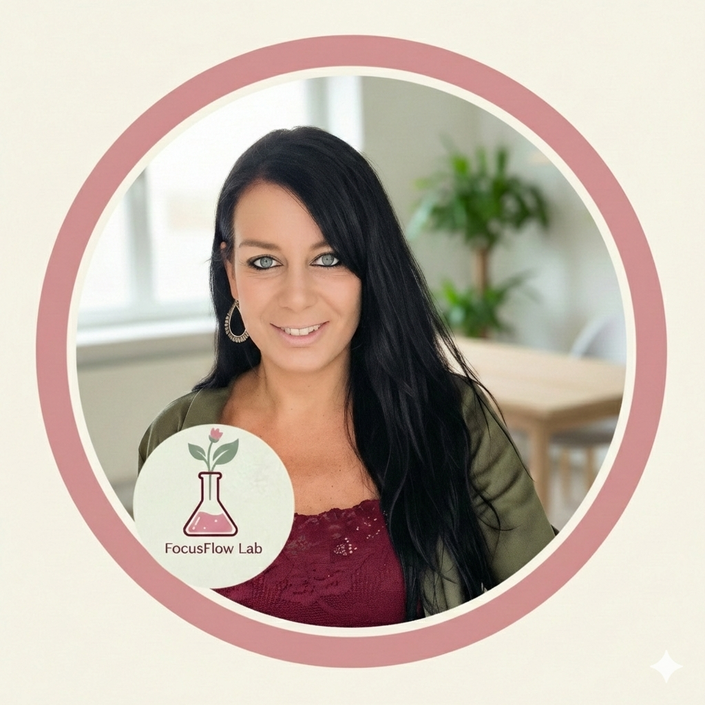

Je bent niet inconsistent. Je plant gewoon tegen je energie in.
Ontdek een systeem dat je neurodivergente brein & cyclus wél snapt. Geen toxische productiviteitstips, maar harde wetenschap, biohacking en ijzersterke systemen.
Systemen die fluïde meebewegen met jouw biologische golven. Omdat time management onzin is voor ADHD'ers: energiemanagement is het enige dat telt.
De allereerste buddy voor neurodivergente vrouwen die met je meedenkt. Helpt je starten op basis van je huidige energie, niet op basis van wilskracht. Geen oordeel, direct rust.
Praat met de assistentStop met vechten tegen je agenda. Ontdek de patronen in je energie, focus en cyclus. Dé tool om te ontdekken wanneer jij piekt en wanneer je moet opladen.
Download de trackerDe ultieme planner die wél rekening houdt met het energieniveau en de menstruatiecyclus van de neurodivergente vrouw. We bouwen het alternatief voor rigide productiviteitstools.
Word VIP Member
“Sinds 2023 leerde ik ADHD en autisme zo diepgaand begrijpen, dat ik het nu herken bij anderen nog voor zij het zelf zien.”
Hoi, ik ben Sarah. Jarenlang optimaliseerde ik als Quality Manager in de Antwerpse voedingsindustrie elk fabrieksproces tot in de puntjes. Behalve mijn eigen systeem. Ik botste voortdurend op mijn grenzen, crashte en voelde me een 'Ferrari met fietsremmen'.
In 2023 begon ik me obsessief te verdiepen in neurodivergentie, aanvankelijk in autisme (ASS) omdat mijn toenmalige partner dat had. Tijdens die intense zoektocht begonnen de puzzelstukjes over mezelf op hun plek te vallen. In december 2024 werd het me glashelder: ik heb ADHD. In maart 2025 volgde de officiële diagnose. Ik startte met medicatie en voor het eerst in mijn leven ging de storm in mijn hoofd liggen.
Maar in die nieuwe stilte... werd ineens iets anders zichtbaar. Mijn ADHD-chaos en constante dopaminejacht hadden altijd mijn diepe nood aan absolute structuur verborgen. Nu de ruis weg was, besefte ik dat prikkels veel harder binnenkwamen. De interne 'kwaliteitscontroleur' nam het over. Ik heb niet alleen ADHD, ik ben 100% overtuigd AuDHD.
Sindsdien is mijn obsessie om álles te weten over het AuDHD-brein (en dat met jullie te delen) alleen maar gegroeid. Ik ontdekte: falen is geen gebrek aan inzet, het is een mismatch van systemen. Traditionele planners zijn gebouwd voor een 24-uurs neurotypisch mannenritme. Wij functioneren op golven, cyclus en energie. Tijd om systemen te bouwen die voor óns werken.